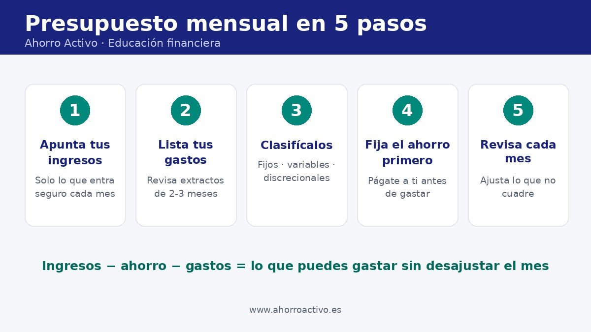

Por David Finanzas
Educación financiera |
Cómo hacer un presupuesto mensual paso a paso
Un presupuesto mensual es un plan sencillo que compara lo que ingresas con lo que gastas para decidir, antes de que acabe el mes, a dónde va tu dinero. No sirve para prohibirte nada: sirve para que los gastos no te sorprendan y para que el ahorro deje de ser lo que sobra.
En esta guía verás cinco pasos para crear el tuyo con papel y boli o una hoja de cálculo, un ejemplo con cifras inventadas y los errores más habituales. Es contenido divulgativo y no recomienda ningún producto ni entidad.

Paso 1: apunta tus ingresos
Anota lo que cobras de forma regular cada mes, ya en neto (lo que realmente llega a tu cuenta). Si tus ingresos varían, usa una cifra prudente, por ejemplo la del mes más bajo de los últimos meses, y trata cualquier extra como un añadido.
Paso 2: lista todos tus gastos
Revisa los extractos de la cuenta y de las tarjetas de los últimos dos o tres meses. Así detectas pagos que se te olvidan: suscripciones, seguros anuales prorrateados, comisiones. Los pequeños desembolsos diarios suman más de lo que parece; ahí ayuda conocer los gastos hormiga.
Paso 3: clasifícalos en tres grupos
Una clasificación habitual, que también emplean las guías de educación financiera, separa los gastos según lo fácil que sea modificarlos:
| Grupo | Qué incluye | Ejemplos |
|---|---|---|
| Fijos obligatorios | Importe estable que tienes que pagar | Alquiler o hipoteca, seguros, cuotas de préstamos |
| Variables imprescindibles | Necesarios, pero su importe cambia | Alimentación, luz, agua, transporte |
| Discrecionales | Puedes reducirlos o eliminarlos | Ocio, restaurantes, suscripciones, compras no urgentes |
Paso 4: fija primero el ahorro
En lugar de ahorrar lo que sobre, resérvalo al cobrar como si fuera un gasto fijo más. Las guías del Banco de España mencionan, como orientación, destinar alrededor de un 10 % de los ingresos, pero la cifra correcta depende de tu situación: empieza con lo que puedas y súbela con el tiempo. Si todavía no tienes colchón, tu primera meta puede ser un fondo de emergencia.
Paso 5: revisa y ajusta cada mes
Compara lo previsto con lo real. Si en una categoría te pasas casi siempre, quizá el presupuesto no era realista: ajústalo en lugar de abandonarlo. Dedicar 15 minutos a final de mes suele bastar.
Ejemplo ilustrativo con cifras inventadas
Importante
Los importes son un ejemplo para entender el método; no son una referencia de lo que debe gastar nadie.
| Concepto | Importe mensual |
|---|---|
| Ingresos netos | 1.800 € |
| Ahorro (primero) | 180 € |
| Fijos obligatorios | 750 € |
| Variables imprescindibles | 500 € |
| Discrecionales | 370 € |
| Saldo final | 0 € (cada euro tiene un destino) |
Comprobación: 180 + 750 + 500 + 370 = 1.800 €. Si al sumar los gastos te pasas de tus ingresos, tienes un déficit y toca recortar sobre todo en discrecionales; si sobra dinero, tienes superávit y puedes aumentar el ahorro.
Si prefieres un reparto por porcentajes, mira la regla 50/30/20 en la guía para ahorrar con un sueldo ajustado, o prueba el método del Kakebo.
Errores comunes
- Calcular con ingresos brutos o con ingresos que no son seguros.
- Olvidar los gastos anuales (seguros, impuestos, matrículas): divídelos entre 12 y apártalos cada mes.
- No dejar un margen para imprevistos pequeños.
- Hacer un presupuesto demasiado estricto y abandonarlo en dos semanas.
- No revisarlo: un presupuesto que no se actualiza deja de servir.
Para recortar en una de las partidas más grandes, consulta cómo ahorrar en la cesta de la compra.
Preguntas frecuentes
¿Necesito una aplicación? No. Basta una libreta o una hoja de cálculo. Lo importante es el hábito de apuntar y revisar, no la herramienta.
¿Cada cuánto debo revisarlo? Una vez al mes como mínimo, y de forma puntual cuando cambie algún ingreso o gasto importante.
¿Qué hago si un mes no llego? Mira qué categoría ha provocado el desajuste, recorta primero en gastos discrecionales y, si el problema se repite, revisa también los fijos. Si hay deudas, valora consultar con un profesional.
Fuentes y más información
- Banco de España – Finanzas para Todos: guía para planificar las finanzas personales.
- BBVA – Salud financiera: guía para hacer un presupuesto paso a paso.
- Finanzas para Todos: portal de educación financiera (Banco de España y CNMV).